Risen — the first undead enemy
Built from Enosh by scripts, stage by stage: an emaciated body, a skull pressed up under the skin, bony hands and feet, cracked skin, a modelled cowl, a quilted gambeson, a torn skirt in two layers, straps, wraps and knee pads, and a rusted notched sword. No red on the main design. Five passes took the critics from 3.5 to 5.4 against 8.

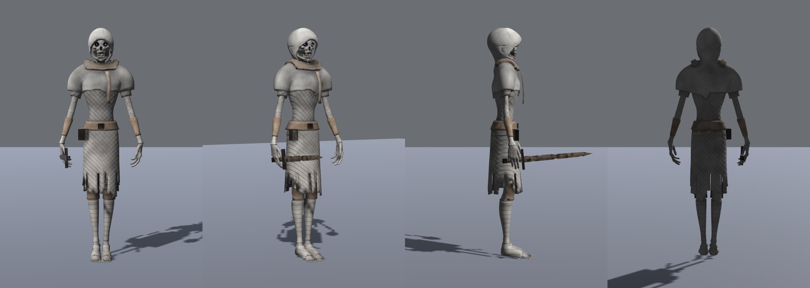

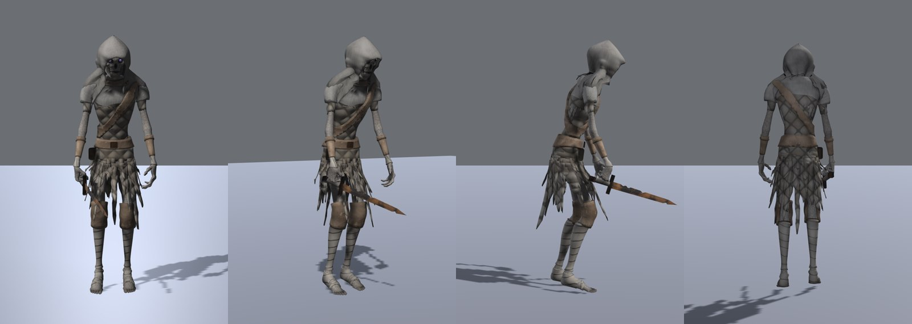

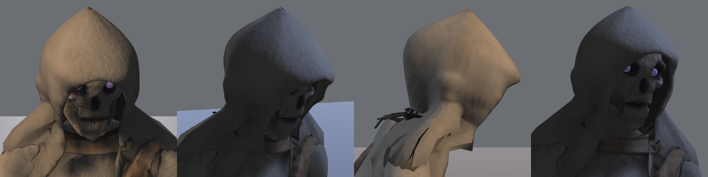

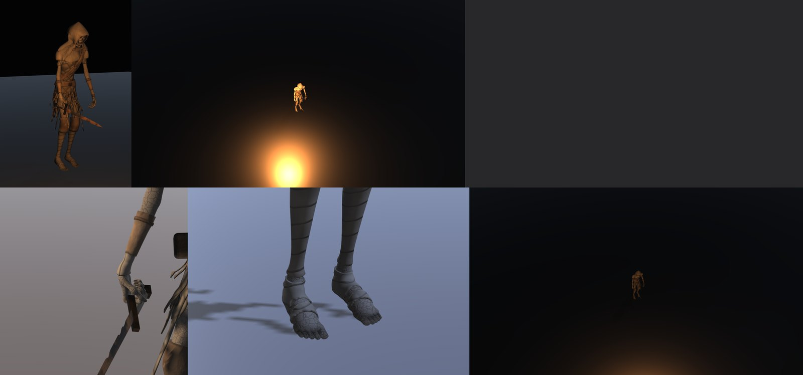

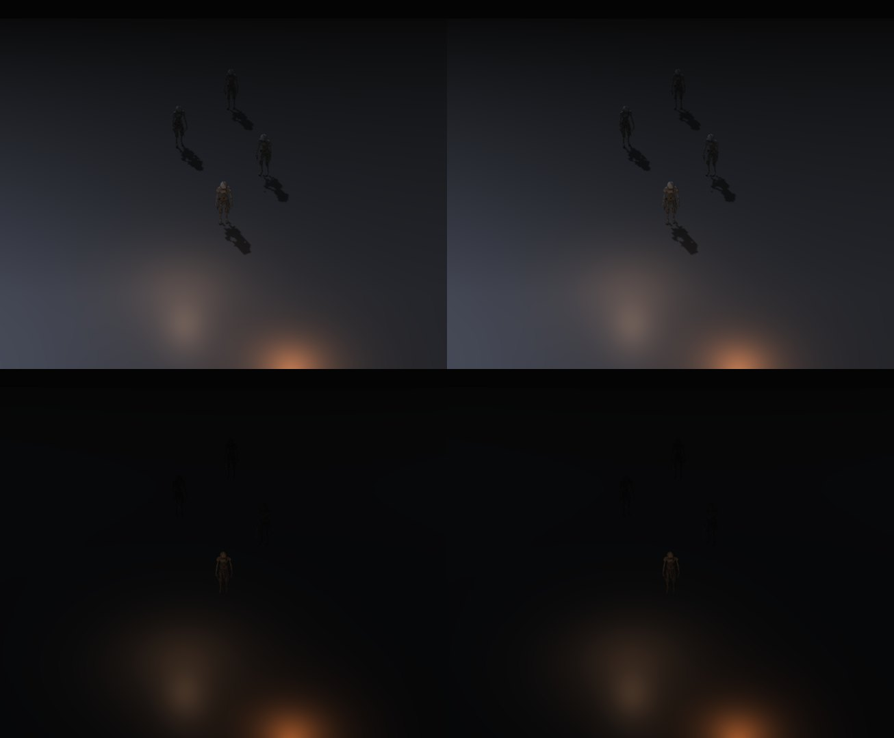
Its own clips (r033)
An idle shamble, a lurching walk and run with a dragging right leg, an overhead slash on the game's enemy timing, a hit, and a death that ends face down.

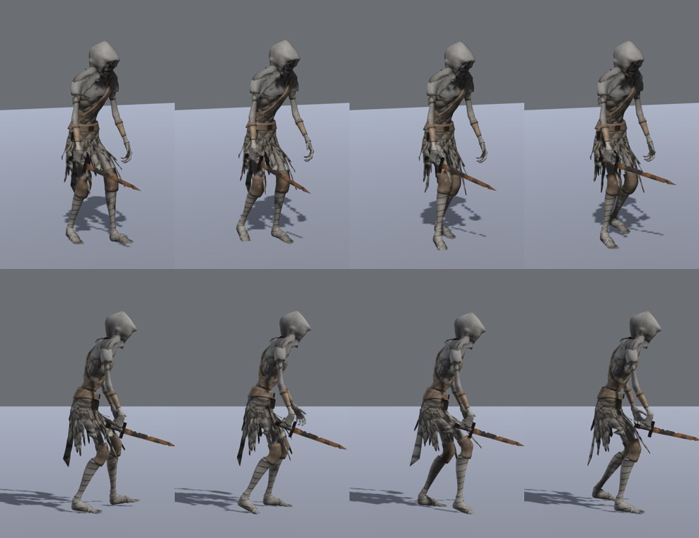

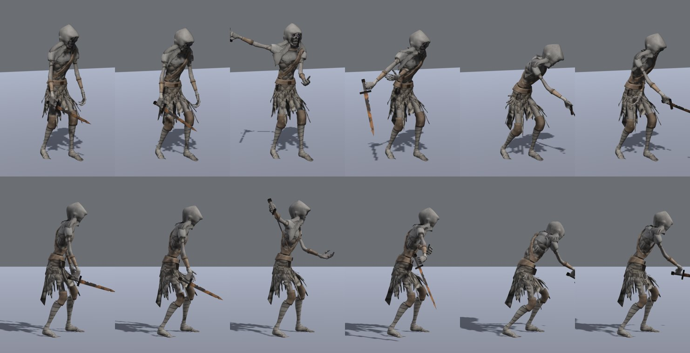

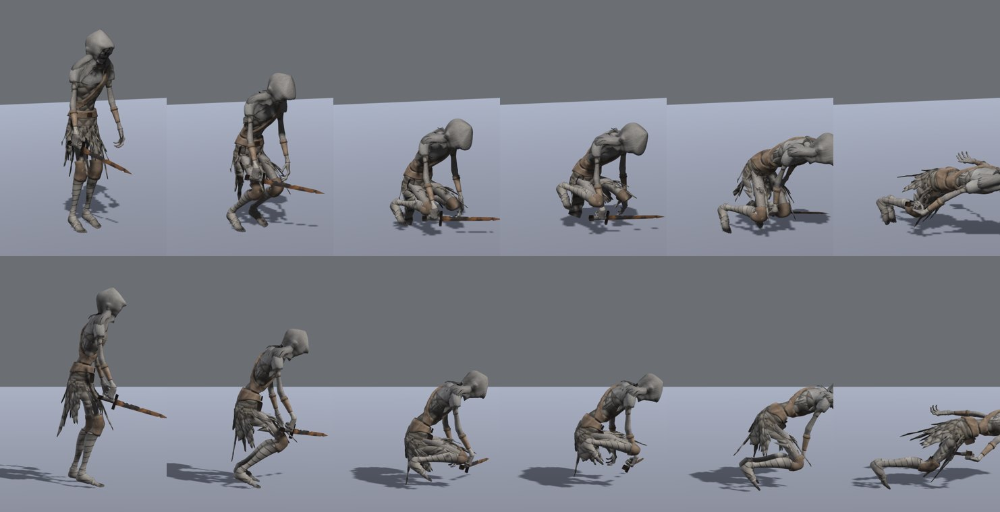
- Still short: the critics still read the cowl as close to a helmet, and the eyes are hidden at game distance. Not watched in Play Mode; walks at 0.52 m/s and runs at 1.52 m/s against the game's 2.2.
Starting gear — Warrior and Priest
Starter kits made once and worn by both Eve and Enosh (they share the same 87-bone skeleton). Three Warrior and three Priest blockouts were made; you chose Warrior C and Priest A. Under the gear, a region system hides the body wherever armour covers it, shadows included, so nothing pokes through. Long hair shows under the cap and hood, by your rule. The Warrior C blockout is fitted on both bodies through every clip with no holes.

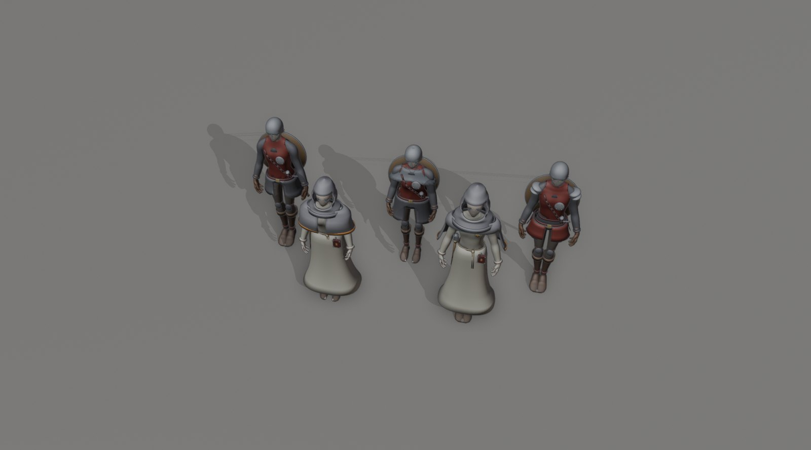

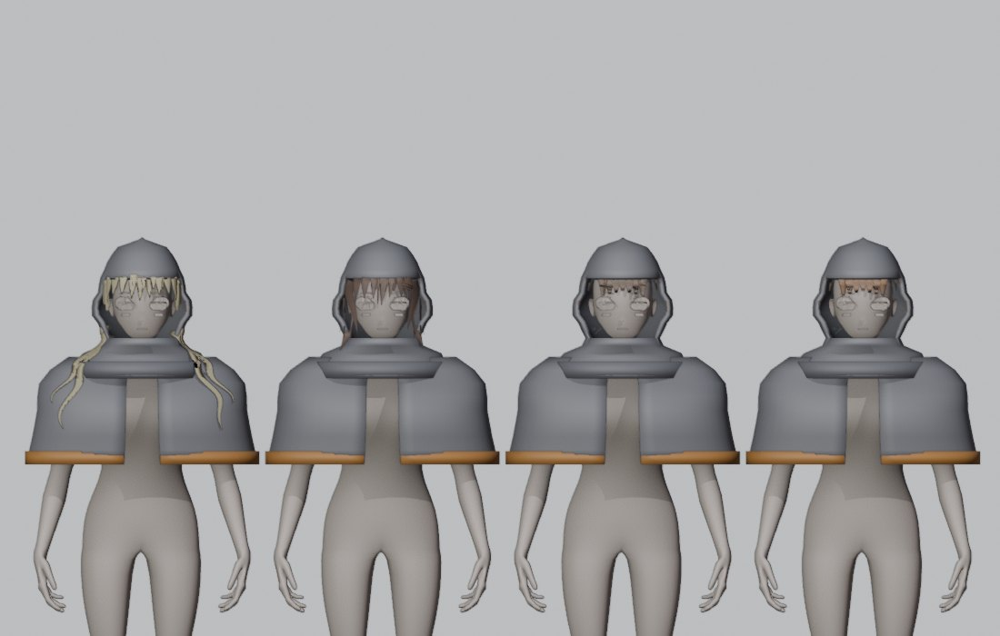

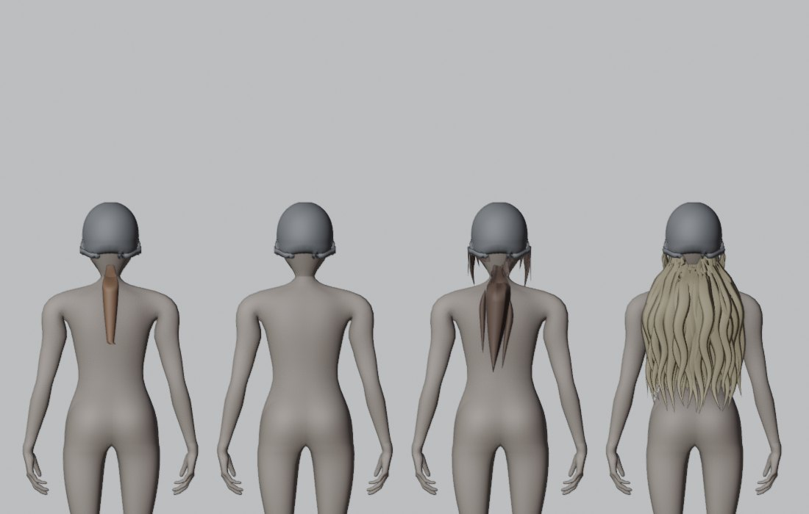

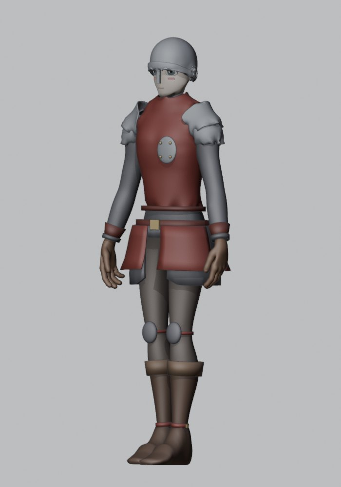

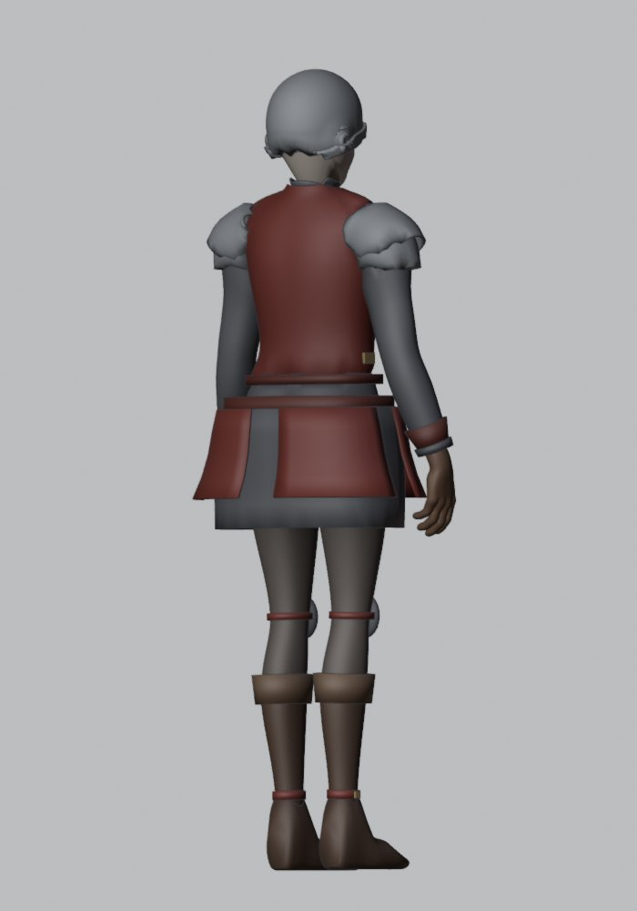
- Stopped after SG4: the shapes built by script plateaued at about 4 of 8. SG5 to SG11 (Priest A, weapons, materials, wardrobe review player) are waiting.